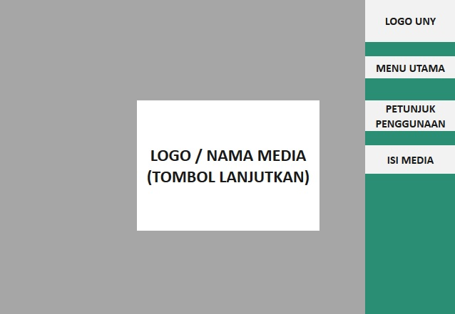
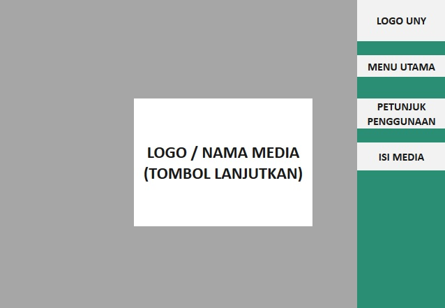
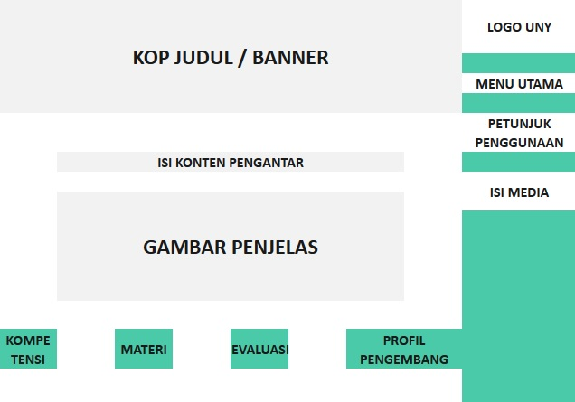
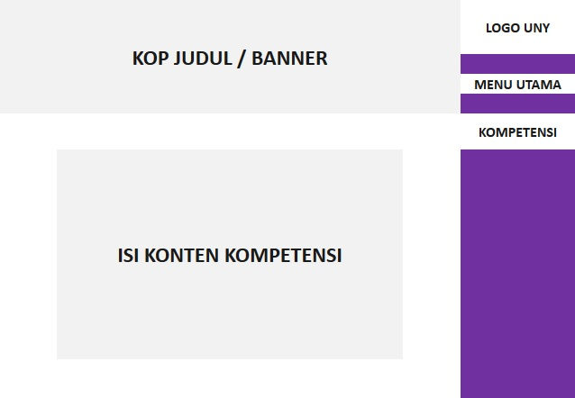
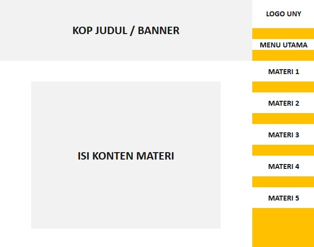
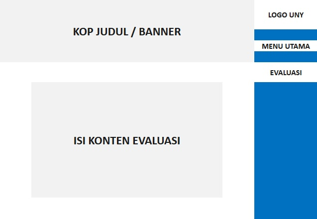
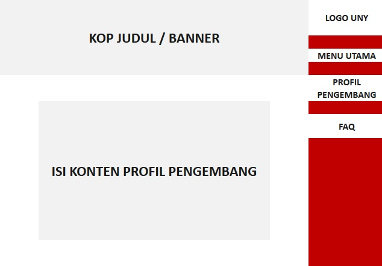

Saat tampilan halaman pembuka atau cover, klik logo untuk melanjutkan.
Cara pakai media ini gampang kok, yuk disimak....

Saat tampilan halaman pembuka atau cover, klik logo untuk melanjutkan.

Kemudian akan muncul halaman petunjuk penggunaan (halaman ini), nah kamu bisa scroll kebawah melanjutkan membaca petunjuk sampai selesai.

Nah dibawah halaman ini ada tombol-tombol menu yang bisa kamu coba kunjungi salah satunya kompetensi. Didalamnya terdapat indikator alias syarat materi yang harus kamu kuasai dari media ini.

Selanjutnya ada halaman materi, berisi materi-materi yang hendak kamu pelajari. Disana terdapat banyak ilmu baru lho, penasaran? baca dahulu ya petunjuk ini sampai selesai.

Setelah materi, ada juga halaman evaluasi. Di dalamnya kamu bisa mencoba mengukur sendiri hasil belajar kamu dengan soal-soal yang ada.

Yang terakhir ada halaman profil pengembang, berisi tentang siapa sih sosok dibalik pembuatan media ini :D. Di dalamnya juga ada kontak yang dapat dihubungi apabila mengalami kendala ataupun saran-saran seputar media ini.